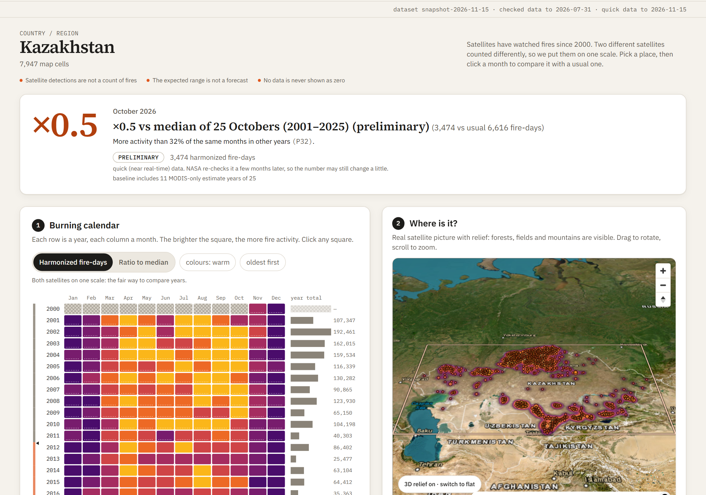
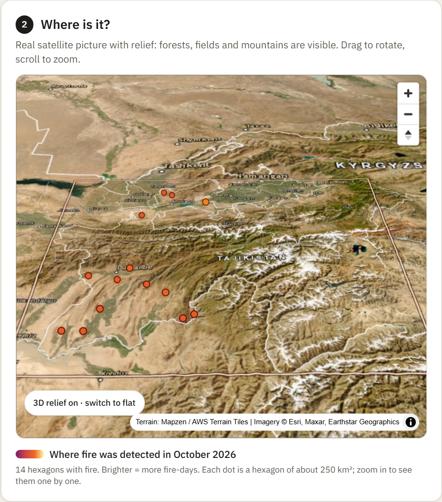

Did Earth burn more — or did our satellites just get better at seeing it?
A harmonized MODIS × VIIRS burning calendar, 2000–2026, for 159 countries and Texas.
Azamat Israilov (team owner · data & harmonization)
Abubakr Damonov (full-stack web app)
Ibrohim Yormahmadov · Muhammadjon Ashurzoda · Sumaiyo Isroilova
MODIS (since 2000, 1 km) and VIIRS (since 2012, 375 m) see the same fire differently. Raw counts are not comparable across 2012.
Emergency services and forestry need one honest sentence per month — not a map of millions of dots.
Gaps, preliminary data and old-sensor estimates are usually drawn the same as real observations. That misleads.
Our answer: one harmonized record from 2000 to today, a calendar anyone can read, and a status on every single number.
Rows are years 2000–2026, columns are months. One glance shows the fire season, the bad years and the quiet ones — on one harmonized scale.

Pick a place — search a country in any of three languages, or press “Use my location”.
Click any month in the calendar. The headline answers in plain words and shows how sure we are.
See where it burned on the 3D satellite map — forests, fields and mountains are visible.
Check the trend, the expected range and download a CSV where every row has its status.

| Usual month | Median of the same month in ≥ 10 other years; the selected year is never in its own baseline. |
| Trend | Mann–Kendall test + Theil–Sen slope; we say “no detectable trend” when p ≥ 0.05. |
| Expected range | Shown as a range, never one number, labelled “not a forecast”. |
| Range check | We measured how often past months fell inside it. |
of months fell inside the “likely” range that aims at 80% — and 92% inside the 95% range. Measured in-sample, so we state it as an upper bound.
| NASA FIRMS | MODIS (Terra/Aqua) and VIIRS (S-NPP) active-fire detections, 2000 – Nov 2026, standard + near real-time. |
| Harmonization | Our data team rescales the MODIS-only years to VIIRS units on an H3 hexagon grid; static sources such as gas flares are removed. |
| Data service | Python · pandas · H3 · FastAPI (Docker) → monthly values, norms, expected ranges per country. |
| Web app | Next.js 16 · TypeScript (strict) · MapLibre 3D terrain · ECharts · Zod-validated API · EN/RU/TJ. |
| Quality | 218 automated tests (unit + end-to-end), accessibility (keyboard, colour-blind-safe scales), served from a CDN on Vercel. |
Base map: Esri World Imagery · relief: AWS Terrain Tiles · country names: Unicode CLDR. Code written with help of an AI coding assistant, reviewed and tested by the team.
Tajik and Russian interfaces, Tajikistan and Kazakhstan in focus — tools that are usually English-only.
Harmonization lets 26 years be compared fairly, so a trend is a trend, not a new satellite.
Live FIRMS feed, alerts for unusual months, drawn areas, district level for Tajikistan.